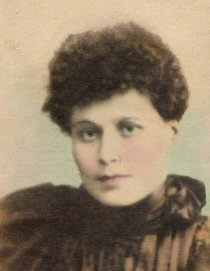
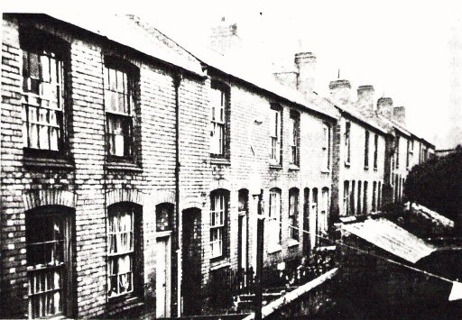
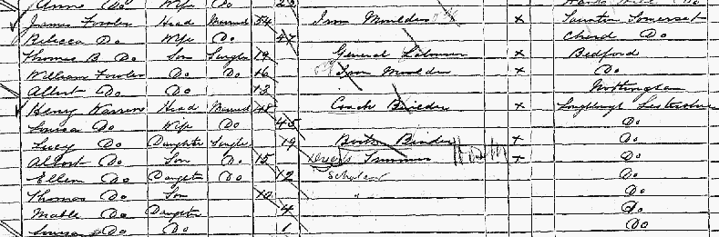
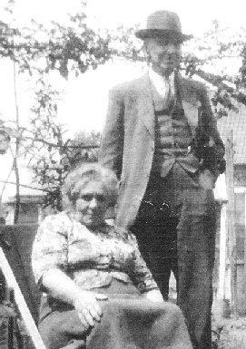

Lucy Warren, 1871 - 1965

Lucy Warren was born in Dannett Street, Leicester, on 11 July 1871. She was the first daughter of Henry and Louisa Warren. Henry was a coachbuilder and a member of a well established coach making family in Loughborough. However, in the period between 1867 and 1881 he had been travelling in search of work, including Leicester and Newport Pagnell. Lucy was baptised in Newport Pagnell in 1875.

By 1881 the family had returned to Loughborough and were living at Russell Street. It is possible that Henry returned to the town to work again in the family business. By 1891 the family had moved to Hartington Street and Lucy was still living with her parents and her five brothers and sisters. Her older brothers Henry and John had already left home. Lucy was 19 years old and working as a bookbinder. Interestingly, living next door to the Warren's at this time were the Fowler's . James and Rebecca Fowler were the grandparents of May Fowler , who would one day marry Lucy's still to be born son William, many years later.

As a bookbinder it is possible that Lucy was working for Alfred Clarke's Printers of 32 Swan Street, Loughborough. If so, it would have been here that Lucy met her future husband Tom Drury . Tom, originally from Eagle in Lincolnshire had arrived in Loughborough in 1890 to work for Alfred Clarke, following the completion of his apprenticeship in Newark.
The couple were married on 2 August 1897 at Holy Trinity, Loughborough and soon after Lucy gave birth to their first child William Drury . The 1901 census shows the three of them living at Oxford Street, Loughborough and Lucy is recorded as not having an occupation and so it is likely that she had given up work to look after William. William was followed in 1903 by a sister called Eva. By 1911 the family had moved again to Derby Road. Tom was still a printer, having left Alfred Clarke and moved to Will's Loughborough Printers in 1898, and Lucy was described as a grocery dealer.

At the outbreak of war in 1914 the family lived in Devonshire Square. Lucy was probably shocked to discover that a few weeks after the outbreak of war Tom had enlisted into the South Staffs Regiment, leaving her to fend for their two children. He had lied about his age claiming he was two years younger. This may be the reason that she became School Caretaker of Emmanuel School for a time during the war. In 1915 William followed his father and enlisted into the Leicestershire Regiment. Tom served overseas from August 1915 and in December 1916 Lucy gave birth to their third child Lyn.
It was during Tom's absence at the front that Lucy met Loughborough man James Dean. After news of Tom's death in July 1918 they moved in together and this led to their subsequent exclusion by Tom's family. After some time living in Shepshed Lucy, James, Eva and Lyn moved to Wharncliffe Road, Loughborough and William returned here when he was demobilised from the army in 1919. Lucy and James were still living at Wharncliffe Road when they married at Loughborough Register Office in April 1920.

Shortly after their marriage Lucy, James, William, Eva and Lyn moved to Nottingham and it was here that Lyn died aged just 4 in 1921. In the same year Eva was married and left home. Lucy, James and William moved to Mapperley and by 1928 William had also left home moving to London. William had met married woman May Croome and they moved to London to avoid the scandal after having a baby, Mavis , in 1928.

Lucy and James remained in Nottingham and were living at Fernwood Crescent, Woolaton, at the time of James's death in 1957. Lucy lived on until 1965 at her home at 24 Oakfield Close, Broxtowe and died at the City Hospital on 29 January of that year, at the age of 93. She was buried in the Northern Cemetery, Nottinghamm.